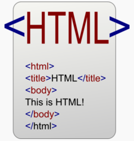
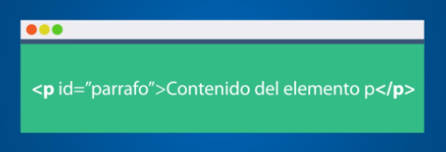

HTML no es un lenguaje de programación, esto debes tenerlo muy en claro desde el principio, HTML es un lenguaje de marcado de hipertexto o “HyperText Markup Language” por el desarrollo de sus iniciales en inglés, básicamente este lenguaje se escribe en su totalidad con elementos, estos elementos están constituidos por etiquetas, contenido y atributos, que explicaremos de una manera más detallada en algunas líneas más abajo. HTML es un lenguaje que interpreta el navegador web para mostrar los sitios o aplicaciones web tal y como estamos acostumbrados. En la Imagen 1 verás cómo el navegador nos muestra un sitio web y en la Imagen 2 verás cómo se ve en lenguaje HTML.
La primera versión de HTML fue publicada por un científico de la computación británico llamado Timohty John Berners-Lee en 1991 y contenía inicialmente pocos elementos, los cuales puedes conocer aquí. Sobre Tim, debes saber también que es conocido como el padre de la web, es fundador de la W3C (World Wide Web Consortium), creador del protocolo HTTP (HyperText Transfer Protocol), creador de la URL (Uniform Resource Locator) y creador del primer navegador web. Sobre la historia de HTML, en 1995 se publicó el estándar HTML 2.0, el primer estándar oficial de HTML. En 1997 se publicó la versión HTML 3.2 y es la primera especificación HTML publicada por la W3C. En 1999 se publicó la versión HTML 4.1 y en el 2014 se publica la versión definitiva de HTML 5. HTML es un lenguaje formado por elementos, un elemento se ve como todo el texto que se muestra en la Imagen 3, los elementos nos ayudan a estructurar y dar significado a las partes de un documento HTML, estos elementos a su vez están conformados por contenido, etiquetas y atributos. Las etiquetas nos sirven para delimitar el inicio y el fin de un elemento, como en el ejemplo, vemos un elemento que utiliza la etiqueta de apertura para indicar el inicio de un párrafo, y la etiqueta de cierre para indicar el fin de un párrafo. El contenido de un elemento pueden ser caracteres, comentarios u otro elemento delimitado dentro de las etiquetas de inicio y de cierre, en el ejemplo pueden ver que el contenido es: “Contenido del elemento p”. Sobre los atributos de un elemento debes saber que siempre se expresan en la etiqueta de inicio y tienen un nombre (Ej. id) y un valor (Ej. parrafo), en el ejemplo vemos el uso del atributo id con su respectivo valor.

CSS, es una tecnología que nos permite crear páginas web de una manera más exacta. Gracias a las CSS somos mucho más dueños de los resultados finales de la página, pudiendo hacer muchas cosas que no se podía hacer utilizando solamente HTML, como incluir márgenes, tipos de letra, fondos, colores... CSS son las siglas de Cascading Style Sheets, en español Hojas de estilo en Cascada. En este reportaje vamos a ver algunos de los efectos que se pueden crear con las CSS sin necesidad de conocer la tecnología entera.

Las Hojas de Estilo en Cascada se escriben dentro del código HTML de la página web, solo en casos avanzados se pueden escribir en un archivo a parte y enlazar la página con ese archivo. En un principio vamos a utilizar la manera más directa de aplicar estilos a los elementos de la página, mas adelante veremos la declaración en archivos externos. Para ello, y esto es la primera lección de este artículo, vamos a conocer un nuevo atributo que se puede utilizar en casi todas las etiquetas HTML: style.
Color en los enlaces Con HTML definimos el color de los enlaces en la etiqueta "body ", con lo atributos link, vlink y alink. Esto nos permite cambiar el color de los enlaces para todo el documento, pero ¿Y si queremos cambiar el color de un enlace en concreto, para que tenga otro color que el definido en la etiqueta "body " Para hacer esto utilizaremos el atributo style dentro del enlace:


JavaScript, es uno de los más potentes e importantes lenguajes de programación en la actualidad, por tres enfoques claros: es útil, práctico y está disponible en cualquier navegador web. JavaScript es creado por Brendan Eich y vio la luz en el año 1995 con el nombre de LiveScript, que luego fue nombrado JavaScript, nace como un lenguaje sencillo destinado a añadir algunas características interactivas a las páginas web. Sin embargo, hoy en día ha crecido de manera acelerada y es el lenguaje de programación que se utiliza en casi todos los sitios web en el mundo. El poder de JavaScript está disponible principalmente en lado frontend, agregando mayor interactividad a la web, también puedes usar las librerías y framework como: jquery, angular, backbone, react y demás, escritas sobre JavaScript, y que te ayudan a crear una mejor experiencia de usuario en nuestros sitios web. De igual manera JavaScript se puede utilizar en los servidores web. Node.JS es tu mejor opción para usar este lenguaje del lado del servidor. Conozcamos ahora las características de JavaScript que haces de este lenguaje, uno de los más populares en la actualidad. Es Liviano. Multiplataforma, ya que se puede utilizar en Windows, Linux o Mac o en el navegador de tu preferencia. Es Imperativo y estructurado, mediante un conjunto de instrucciones indica al computador qué tarea debe realizar. Prototipado, debido a que usa prototipos en vez de clases para el uso de herencia. Orientado a objetos y eventos. Es Interpretado, no se compila para poder ejecutarse. Estas son las características que hacen de javascript un lenguaje que te permite desarrollar aplicaciones gigantes y potentes, como lo es: google doc, facebook, twitter e incluso capaz de ejecutarse en el servidor como un servidor Web muy rápido, gracias a nodejs.